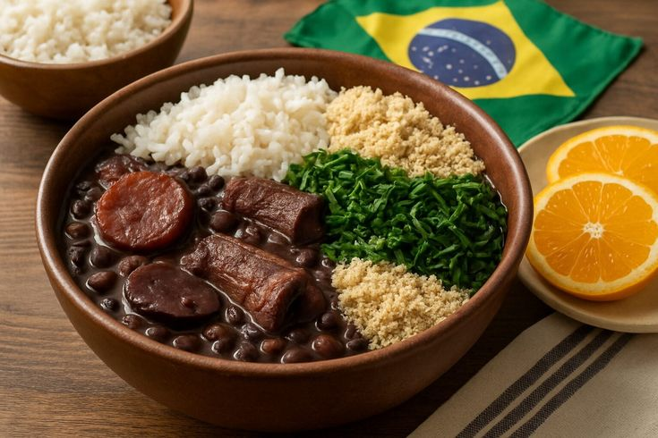
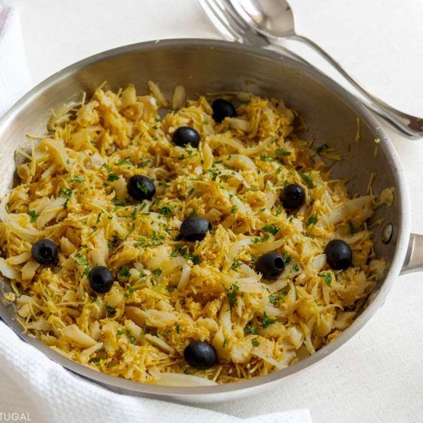

Cardápio
-

Feijoada Completa - R$ 45,00
Feijão preto com carnes selecionadas, arroz, farofa, couve e laranja. O prato mais tradicional da nossa culinária!
-
 Frango Grelhado com Legumes - R$ 39,90
Frango Grelhado com Legumes - R$ 39,90Frango suculento grelhado acompanhado de legumes frescos e arroz.
-

Bacalhau à Brás - R$ 55,00
O tradicional bacalhau desfiado com batatas, ovos e azeitonas.
-
Brigadeiro Gourmet - R$ 18,90
Delicioso brigadeiro de leite condensado com chocolate belga e granulado fino.